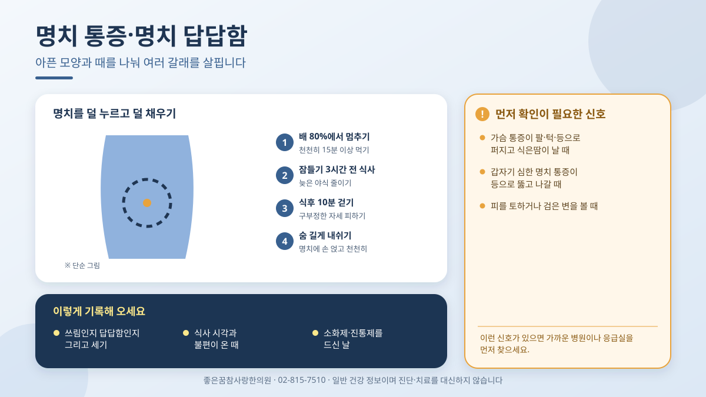

이종호 한의사 감수좋은꿈참사랑한의원 대표원장 (한의사 면허번호 19769)발행 2026-11-26 · 수정 2026-11-26
이 글의 차례
점심을 급하게 먹고 자리에 돌아와 앉았는데, 가슴 아래 갈비뼈가 만나는 오목한 자리가 묵직하게 막힌 듯합니다. 손바닥으로 그 자리를 쓸어내려 보고, 허리를 펴 보기도 하지만 답답함은 오후 내내 이어집니다. 어떤 날은 콕콕 쑤시기도 하고, 어떤 날은 돌덩이를 얹어 놓은 것 같기도 합니다.
진료실에서 손가락으로 명치를 가리키며 "여기가 늘 답답해요"라고 말씀하시는 분을 자주 뵙습니다. 내시경을 받아 봐도 가벼운 위염 정도라는 말을 들었는데, 불편은 그보다 훨씬 크게 느껴진다고 하십니다. 그 마음이 충분히 이해됩니다.
명치는 몸 한가운데, 위와 식도가 만나는 자리 바로 앞입니다. 그 주변에는 쓸개, 췌장, 십이지장, 심장, 가슴 근육과 갈비뼈 연골이 모여 있습니다. 그래서 명치가 아프다는 같은 말 안에도 여러 갈래의 이야기가 들어 있을 수 있습니다.
저는 명치 불편을 말씀하시는 분께 "아픈 건가요, 막힌 건가요?"를 먼저 여쭙니다. 쓰리고 찌르는 통증인지, 꽉 차고 눌리는 답답함인지에 따라 살펴볼 방향이 달라지기 때문입니다. 그다음 언제, 무엇을 하고 나서 심해지는지를 함께 나눠 봅니다.
명치 불편은 어떤 모양으로 나타나나요?
명치 불편을 말씀하시는 표현은 정말 다양합니다. 쓰리다, 타는 것 같다, 콕콕 찌른다, 쥐어짠다, 꽉 막혔다, 돌을 얹어 놓은 것 같다, 뭔가 얹혀 있다, 숨을 깊이 쉬기 어렵다. 이 표현 하나하나가 살펴볼 방향을 알려 주는 단서입니다.
쓰리고 타는 느낌은 위산과 관련된 불편을 먼저 떠올립니다. 빈속에 심해지거나 먹으면 잠시 가라앉는 쓰림이라면 위나 십이지장 쪽을, 먹고 나서 눕거나 허리를 숙일 때 올라오는 타는 느낌이라면 역류 쪽을 함께 봅니다.
꽉 막히고 눌리는 답답함은 위가 음식을 내려보내는 흐름이 느려진 경우가 많습니다. 조금만 먹어도 금방 배부르고, 식사 뒤 한참이 지나도 명치에 음식이 머물러 있는 느낌이 듭니다. 긴장할 때 명치가 조여 오는 분도 이 모양을 자주 말씀하십니다.
왜 명치가 아프거나 답답해질까요?
가장 흔한 것은 위 자체의 불편입니다. 과식과 야식, 빠르게 먹는 습관, 기름진 음식과 술, 커피가 위의 부담을 키웁니다. 진통제를 자주 드시는 분은 위벽이 자극받아 쓰림과 통증이 생기기도 합니다.
긴장과 스트레스도 명치에 먼저 드러나는 경우가 많습니다. 마음이 쫓기면 위의 움직임이 멈칫하고, 명치 주변 근육과 횡격막이 굳으면서 숨이 얕아지고 꽉 막힌 느낌이 듭니다. 한의학에서 말하는 심하비, 곧 명치 아래가 막혀 답답한 상태가 이런 모양과 가깝습니다.
쓸개 쪽 불편은 명치에서 오른쪽 갈비뼈 아래로 이어지는 통증으로 나타나기 쉽습니다. 기름진 음식을 먹고 몇 시간 뒤에 심해지고, 오른쪽 어깨나 등까지 당긴다면 쓸개 쪽을 함께 살펴야 합니다. 이런 경우에는 내과에서 복부 초음파로 먼저 확인하시는 것이 좋습니다.
가슴 근육과 갈비뼈 연골이 원인인 경우도 있습니다. 무거운 물건을 들거나 오래 구부정하게 앉은 뒤, 기침을 많이 한 뒤에 명치 주변을 누르면 아프고, 몸을 비틀 때 통증이 달라진다면 근육과 연골 쪽 이야기일 가능성이 큽니다.
명치 위쪽 가슴 가운데의 통증은 심장과도 가까운 자리라서 진료실에서 꼭 따로 여쭙니다. 계단을 오르거나 힘을 쓸 때 심해지고 쉬면 가라앉는 통증이라면 소화기보다 심장 쪽 확인을 먼저 권합니다.
한의학에서는 명치를 어떻게 살피나요?
한의학에서는 명치 아래를 누르며 살피는 복진을 중요하게 여깁니다. 명치 아래가 단단하게 버티는지, 눌렀을 때 답답함이 더 커지는지, 손바닥에 닿는 배의 온도가 차가운지 따뜻한지를 봅니다. 같은 답답함이라도 배의 모양에 따라 살피는 방향이 달라집니다.
명치 아래가 막혀 답답하지만 눌러도 그리 아프지 않은 상태를 예로부터 심하비라고 불렀습니다. 위의 흐름이 막히고 긴장이 겹친 모양으로 보고, 식사와 마음의 리듬을 함께 살핍니다. 반대로 누르면 아프고 단단하게 뭉쳐 있다면 음식이 오래 머물거나 열이 쌓인 쪽을 함께 생각합니다.
이런 한의학의 살핌은 내시경이나 초음파 같은 검사를 대신하는 것이 아닙니다. 검사로 큰 이상을 먼저 확인하고, 그 위에서 몸의 흐름과 긴장을 함께 읽는 방법이라고 생각해 주시면 됩니다.
아픈 때를 나눠 보면 무엇이 보이나요?
빈속에 아프고 먹으면 가라앉는다면 위산과 위벽 쪽을, 먹고 바로 답답해진다면 위가 음식을 받아들이는 힘을, 먹고 한두 시간 뒤에 무거워진다면 위가 비워지는 흐름을 먼저 떠올립니다. 같은 명치 불편이라도 식사와의 시간 관계가 큰 단서가 됩니다.
밤에 누우면 심해지는 불편은 역류와 함께 저녁 식사 시각을 살핍니다. 잠들기 두세 시간 전에 식사를 마치는지, 늦은 야식이나 술이 잦은지에 따라 이야기가 달라집니다.
특정 상황에서만 생기는 답답함도 있습니다. 출근 전, 회의 직전, 가족과 다툰 뒤처럼 마음이 흔들리는 자리에서 명치가 조여 온다면 긴장 쪽을 함께 살핍니다. 이런 분은 휴가 중에는 명치가 한결 편하다고 말씀하시는 경우가 많습니다.
명치 불편을 두고 자주 헷갈리는 것
첫째, 명치가 답답하면 다 체한 것이라는 생각입니다. 체기처럼 느껴져도 실제로는 역류나 쓸개, 근육, 긴장처럼 다른 갈래일 수 있습니다. 같은 불편이 자주 되풀이된다면 한 번쯤 차근차근 나눠 보는 것이 좋습니다.
둘째, 소화제를 먹으면 나아지니 괜찮다는 생각입니다. 잠시 도움이 될 수는 있지만 소화제를 찾는 횟수가 점점 늘어난다면, 그 자체가 살펴볼 신호입니다. 몇 번, 어떤 때 드셨는지 기록해 두시면 진료에 도움이 됩니다.
셋째, 내시경이 깨끗하면 아플 이유가 없다는 생각입니다. 내시경은 위벽의 상처와 염증을 보는 검사라서, 위의 움직임이나 긴장으로 생기는 불편은 잘 드러나지 않을 수 있습니다. 검사가 깨끗하다는 것은 큰 걱정을 덜었다는 뜻이지, 불편이 없다는 뜻은 아닙니다.
계절과 생활에 따라 달라지는 명치 불편
겨울에는 찬 공기에 몸이 움츠러들고 움직임이 줄면서 명치가 답답해지기 쉽고, 모임이 잦아지며 과식과 술도 늘어납니다. 여름에는 찬 음료와 에어컨 바람에 배가 차가워져 명치가 꽉 막히는 분이 많습니다.
책상 앞에서 오래 구부정하게 앉아 일하는 분은 명치가 눌린 자세가 하루 종일 이어집니다. 점심 직후 바로 앉아 고개를 숙이고 일하면 명치 답답함이 오후 내내 이어지기 쉽습니다. 식사 뒤 10분만 일어서서 걷는 것으로도 차이를 느끼시는 분이 많습니다.
모니터 높이를 눈높이에 맞추고 의자를 책상 가까이 당겨 앉는 것도 명치가 접히는 자세를 줄이는 데 도움이 됩니다. 한 시간에 한 번 자리에서 일어나 기지개를 켜고 가슴을 펴 주세요.
먼저 이렇게 여쭙니다
처음 오시면 대략 이런 순서로 여쭙니다. 미리 떠올려 오시면 이야기가 수월해집니다.
- 명치 불편은 언제부터 시작되었나요? 쓰린가요, 막힌 듯 답답한가요?
- 빈속과 식사 뒤 가운데 언제 더 심한가요?
- 오른쪽 갈비뼈 아래나 등, 어깨로 퍼지는 느낌이 있나요?
- 신물, 트림, 메슥거림, 더부룩함이 함께 오나요?
- 진통제나 새로 드시기 시작한 약, 영양제가 있나요?
- 계단을 오르거나 힘을 쓸 때 심해지지는 않나요?
모든 질문에 정확히 답하지 못하셔도 괜찮습니다. "어떤 모양으로 아픈지"와 "언제 심한지" 두 가지만 분명해도 이야기의 절반은 시작된 셈입니다.
일상에서 먼저 해 볼 수 있는 것
명치 불편이 있을 때는 위에 부담을 덜고, 명치를 누르는 자세와 긴장을 풀어 주는 쪽으로 시작합니다. 하나씩 골라 일주일씩 해 보세요.
- 한 번에 많이 먹지 않고, 배가 80% 정도 찼을 때 숟가락 내려놓기
- 한 끼를 15분 이상 천천히 꼭꼭 씹어 먹기
- 잠들기 두세 시간 전에는 식사 마치기
- 식사 뒤 바로 눕거나 구부정하게 앉지 말고 10분 걷기
- 커피, 술, 기름진 음식, 매운 음식은 불편이 심한 기간에 줄이기
- 진통제는 꼭 필요할 때만, 빈속을 피해서 드시기
명치가 조여 올 때는 의자에 등을 기대고 앉아 한 손을 명치에 얹고, 코로 천천히 들이쉬며 손이 살짝 올라오는 것을 느낀 뒤 입으로 길게 내쉬어 보세요. 내쉬는 숨을 들이쉬는 숨보다 길게 하는 것만으로도 명치 주변 근육이 조금씩 느슨해지는 것을 느끼실 수 있습니다.
배를 따뜻하게 하는 것도 도움이 됩니다. 찬 음료 대신 미지근한 물을 드시고, 명치와 배꼽 주변을 따뜻한 손바닥으로 시계 방향으로 천천히 쓸어 주세요. 너무 세게 누르기보다 부드럽게 원을 그리는 정도가 좋습니다.
허리띠나 바지 허리를 꽉 조이는 옷도 명치를 누르는 원인이 됩니다. 식사 시간만이라도 허리를 조금 느슨하게 하고, 앉을 때 등을 등받이에 붙여 명치가 접히지 않게 해 보세요. 자세 하나로도 오후의 답답함이 달라지는 분이 많습니다.
한의원에서 함께 살필 수 있는 경우
- 내과 검사에서 큰 이상은 없다는데 명치 답답함이 오래 이어지는 경우
- 긴장하거나 신경 쓸 일이 있으면 명치가 먼저 조여 오는 경우
- 조금만 먹어도 명치가 꽉 차고 식사량이 줄어든 경우
- 명치 답답함과 함께 한숨이 잦고 잠이 얕은 경우
- 오래 구부정하게 앉은 뒤 명치 주변 근육이 결리는 경우
좋은꿈참사랑한의원에서는 먼저 아래 '먼저 확인이 필요한' 신호가 없는지 살핀 뒤, 맥과 배, 혀를 함께 봅니다. 명치 아래를 눌렀을 때 단단하게 저항이 느껴지는지, 갈비뼈 아래가 뻣뻣한지, 배가 차가운지를 직접 만져 보며 확인합니다.
진찰한 내용을 바탕으로 침, 온열 관리, 한약 상담 가운데 지금 상태에 맞는 것을 정하고, 먹는 습관과 자세, 긴장 가운데 바꿔 볼 것 하나를 함께 고릅니다. 한약을 상의할 때는 드시는 약을 모두 확인하고 신중하게 정합니다. 임신 중이라면 먼저 알려 주시고 산부인과와 상의해 주세요.
내과에서 위장약을 처방받아 드시고 계시다면 그대로 이어 가시면 됩니다. 처방받은 약은 처방한 선생님과 상의 없이 멈추지 않으시도록 안내하고, 필요하면 내과 진료를 함께 받으시도록 권합니다.
이렇게 기록해 오시면 상담이 쉬워집니다
명치 불편은 진료실에 계시는 동안 잠잠한 경우가 많아서, 집에서 쌓은 기록이 큰 도움이 됩니다. 1~2주만 간단히 적어 보세요.
- 불편이 시작된 시각과 이어진 시간
- 쓰림인지 답답함인지, 대략의 세기
- 직전에 먹은 음식과 식사 시각, 먹은 속도
- 오른쪽 갈비뼈 아래나 등으로 퍼졌는지
- 긴장했거나 바빴던 날, 잠이 짧았던 날 표시
- 소화제나 진통제를 드신 날과 횟수
기록을 나란히 놓고 보면 명치가 불편한 날과 식사, 잠, 긴장 사이의 연결이 보이기 시작합니다. 그 연결 하나가 다음에 바꿔 볼 생활을 정하는 실마리가 됩니다. 불편이 덜했던 날을 함께 표시해 두시면, 그날 무엇이 달랐는지도 함께 찾아볼 수 있습니다.
명치에 손을 얹고 지내 오신 분께
명치 불편은 겉으로 드러나지 않아서 혼자 견디시는 경우가 많습니다. 자꾸 명치를 쓸어내리는 손, 깊은 한숨, 식사 자리에서 숟가락을 일찍 내려놓는 모습. 저는 진료실에서 그런 작은 몸짓부터 먼저 여쭙습니다.
명치 불편은 하루아침에 달라지기보다, 불편한 날의 간격이 조금씩 벌어지고 세기가 옅어지는 모양으로 변하는 경우가 많습니다. 이번 주에는 천천히 먹기와 식사 뒤 10분 걷기 가운데 하나만 골라 보세요. 다음에 오시면 그 기록부터 함께 펼쳐 보겠습니다.
이런 증상은 먼저 확인이 필요합니다
- 가슴을 쥐어짜거나 누르는 통증이 팔·턱·등으로 퍼지고 식은땀이나 숨참이 함께 오는 경우
- 갑자기 시작된 심한 명치 통증이 등으로 뚫고 나가듯 이어지거나, 피를 토하거나 검은 변을 보는 경우
이런 신호가 있으면 한의원보다 가까운 병원이나 응급실을 먼저 찾으세요.
함께 읽으면 좋은 글
- 식사 뒤에 속이 더부룩한 것은 무엇 때문이고, 속쓰림과는 어떻게 다른가요?
- 속쓰림과 신물이 오래 갈 때 어떤 점을 살펴보고, 언제 검사를 받아야 하나요?
- 위내시경에서 만성 위염이라는 말을 들었을 때 무엇을 알아두고 어떻게 살피나요?
- 자주 체한다는 느낌, 식체나 담적이라는 말은 무엇을 뜻하고 어떻게 살피나요?
- 위궤양이나 십이지장궤양 치료를 받고 회복하는 동안에는 식사와 생활을 어떻게 살피나요?

여쭙는 것
- 명치 불편은 언제부터 시작되었나요? 쓰린가요, 막힌 듯 답답한가요?
- 빈속과 식사 뒤 가운데 언제 더 심한가요?
- 오른쪽 갈비뼈 아래나 등, 어깨로 퍼지는 느낌이 있나요?
생활에서 해 볼 것
- 한 번에 많이 먹지 않고, 배가 80% 정도 찼을 때 숟가락 내려놓기
- 한 끼를 15분 이상 천천히 꼭꼭 씹어 먹기
- 잠들기 두세 시간 전에는 식사 마치기
한의원에서 함께 살필 것
- 내과 검사에서 큰 이상은 없다는데 명치 답답함이 오래 이어지는 경우
- 긴장하거나 신경 쓸 일이 있으면 명치가 먼저 조여 오는 경우
- 조금만 먹어도 명치가 꽉 차고 식사량이 줄어든 경우
먼저 확인이 필요한 신호
- 가슴을 쥐어짜거나 누르는 통증이 팔·턱·등으로 퍼지고 식은땀이나 숨참이 함께 오는 경우
- 갑자기 시작된 심한 명치 통증이 등으로 뚫고 나가듯 이어지거나, 피를 토하거나 검은…
한눈에 보는 표
| 구분 | 핵심 |
|---|---|
| 여쭙는 것 | 명치 불편은 언제부터 시작되었나요? 쓰린가요, 막힌 듯 답답한가요? 빈속과 식사 뒤 가운데 언제 더 심한가요? |
| 생활에서 해 볼 것 | 한 번에 많이 먹지 않고, 배가 80% 정도 찼을 때 숟가락 내려놓기 한 끼를 15분 이상 천천히 꼭꼭 씹어 먹기 |
| 한의원에서 함께 살필 것 | 내과 검사에서 큰 이상은 없다는데 명치 답답함이 오래 이어지는 경우 긴장하거나 신경 쓸 일이 있으면 명치가 먼저 조여 오는 경우 |
| 먼저 확인이 필요한 신호 | 가슴을 쥐어짜거나 누르는 통증이 팔·턱·등으로 퍼지고 식은땀이나 숨참이 함께 오는 경우 갑자기 시작된 심한 명치 통증이 등으로 뚫고 나가듯 이어지거나, 피를 토하거나 검은 변을 보는 경우 |
자주 묻는 질문
명치가 답답하면 체한 건가요?
체한 느낌과 비슷하지만 역류, 위의 흐름, 쓸개, 가슴 근육, 긴장처럼 여러 갈래가 있을 수 있습니다. 아픈 모양과 때를 나눠 보며 함께 살핍니다.
명치를 눌러서 아프면 위가 나쁜 건가요?
위 쪽일 수도 있고 명치 주변 근육이나 갈비뼈 연골 쪽일 수도 있습니다. 누르는 자리와 몸을 비틀 때의 변화를 함께 보며 나눠 봅니다.
진통제를 자주 먹는데 명치가 쓰린 것과 관련이 있나요?
일부 진통제는 위벽을 자극할 수 있어서 함께 살펴봅니다. 꼭 필요한 약이라면 처방한 선생님과 상의해 드시는 방법을 조정해 보시길 권합니다.
내시경을 받은 지 오래되었는데 다시 받아야 하나요?
나이, 마지막 검사 시기, 지금 불편의 모양에 따라 달라집니다. 오래 이어지거나 모양이 달라졌다면 내과에서 검사 시기를 상의해 보시길 권합니다.
좋은꿈참사랑한의원은 재진 때 지난번 이야기부터 이어서 여쭙니다. 진료시간과 예약은 오시는 길에서 확인하세요.
어디서 상담받을 수 있나요?
좋은꿈참사랑한의원은 서울 동작구 만양로2길 2 신성빌딩 3층·5층(서울 동작구 상도동, 7호선 상도역 3번 출구 근처)에 있습니다. 한의사 3명(이종호 대표원장, 조영기 수석진료원장, 정원영 진료원장)이 진료합니다. 진료시간은 평일 09:30~20:00(점심 13:00~14:00), 토·일·공휴일 09:30~15:00이며, 방문 전 전화로 확인을 권합니다. 예약은 네이버 예약, 카카오톡 상담, 전화 02-815-7510로 받습니다.
이 글은 일반적인 건강 정보이며 개인의 진단이나 치료를 대신하지 않습니다. 증상이 있거나 복용 중인 약이 있다면 진료를 통해 확인하세요. 치료 효과는 개인마다 다를 수 있습니다.
작성 기준: 일반적으로 알려져 있는 건강 정보를 참고해 정리했습니다(대표원장 감수). 증상 기록은 1~2주 동안 하루 1회, 비슷한 시간에 적어 오시면 지난 상태와 비교하기 쉽습니다.